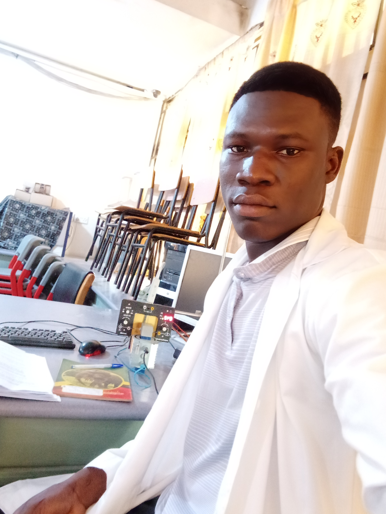

I am a Web App Developer And a Physicist
Meet Mr. Bayulu Yakubu, a brilliant physicist and web developer
who combines his passion for science and technology to innovate in both fields.
I always had a fascination with the natural world and how it works. I pursued
this interest by obtaining a Bsc. in Physics from a top university in Ghana
Kwame Nkrumah University Of Science And Technology (KNUST),
where I specialized in physics with computing.
My research focused on developing mathematical models to understand the
behavior of complex systems and their properties and also develop a system
to help students to easily simulate certain concepts in physics.

I am a physicist and web developer who has found a way to combine my love for science and technology. I was always fascinated by the workings of the universe and the laws that governed it. I pursued my studies in physics and completed my Bsc. in physics from a prestigious university.
After completing my studies, I was looking for a way to apply my knowledge of physics to practical problems. I was drawn to the world of web development, where I could use my skills to solve real-world problems using technology. I started learning web development on my own and soon became proficient in programming languages like HTML, CSS, and JavaScript.
As she honed her skills, Maria began to apply her knowledge of physics to the development of web applications. She started working on projects that involved complex data visualization and simulation. Her background in particle physics proved particularly useful in this area, as she was able to use her understanding of particle interactions to create accurate simulations.
Maria's unique combination of skills made her a valuable asset to many organizations. She started working as a freelance web developer and quickly gained a reputation for her ability to solve complex problems using innovative solutions. She also began teaching web development and physics at a local university, sharing her knowledge with the next generation of scientists and developers.
Today, Maria is a respected physicist and web developer who continues to push the boundaries of what is possible with technology. She is passionate about using her skills to make a positive impact on the world and is always looking for new ways to combine her love for science and technology.
Some services
Web Development: Dr. Maria Rodriguez has expertise in programming languages such as HTML, CSS, and JavaScript. She can offer web development services to individuals or businesses who need to build a website or web application.
Data Visualization: Dr. Rodriguez's background in particle physics makes her well-equipped to create accurate data visualizations. She can provide data visualization services to help clients better understand complex data sets and trends.
Simulation: Dr. Rodriguez has experience in creating simulations, especially those that involve particle interactions. She can provide simulation services to clients who need to simulate physical or biological processes.
Teaching: Dr. Rodriguez has experience teaching both physics and web development at a university level. She can offer teaching services to individuals or groups who want to learn more about these subjects.
Consulting: Dr. Rodriguez's unique combination of skills makes her a valuable consultant. She can offer consulting services to businesses or organizations that need help with web development, data visualization, simulation, or other related topics.
Overall, Dr. Maria Rodriguez's expertise in physics and web development makes her a versatile professional who can offer a range of services to clients in different industries.
Some skills
Physics: Dr. Rodriguez has a Ph.D. in particle physics, indicating a strong understanding of physical concepts and principles.
Web Development: Dr. Rodriguez has proficiency in programming languages such as HTML, CSS, and JavaScript, indicating a skillset in web development.
Data Visualization: Dr. Rodriguez's background in particle physics likely means she has experience visualizing complex data sets.
Simulation: Dr. Rodriguez has experience creating simulations, particularly those related to particle interactions.
Problem-Solving: Dr. Rodriguez's ability to combine her knowledge of physics and web development to solve complex problems demonstrates her problem-solving skills.
Teaching: Dr. Rodriguez has experience teaching both physics and web development at a university level, indicating strong communication and teaching skills.
Consulting: Dr. Rodriguez's ability to offer consulting services in web development, data visualization, simulation, and other related topics suggests strong analytical and consulting skills.
Overall, Dr. Maria Rodriguez's skills in physics and web development, combined with her teaching and consulting experience, make her a versatile professional who can bring a unique perspective to a variety of projects and situations.
Education Background
According to the content provided, Dr. Maria Rodriguez has a Ph.D. in particle physics.
Therefore, it can be inferred that she has completed a Bachelor's degree, a Master's degree,
and a Doctoral degree in Physics or a related field, with a focus on particle physics.
She may have also completed additional coursework or training in web development
to develop her skills in this area.
Experiences
Physics Research: Dr. Rodriguez likely has experience conducting research in particle physics, including designing and performing experiments, analyzing data, and publishing scientific papers.
Web Development Projects: Dr. Rodriguez has experience working on web development projects, including building websites and web applications, as well as creating data visualizations and simulations.
Freelance Work: Dr. Rodriguez has worked as a freelance web developer, which may have provided her with experience working with a variety of clients and projects.
Teaching: Dr. Rodriguez has taught physics and web development at a university level, providing her with experience in curriculum development, lesson planning, and student assessment.
Consulting: Dr. Rodriguez has offered consulting services in web development, data visualization, and simulation, which may have provided her with experience working with clients from various industries and backgrounds.
Overall, Dr. Maria Rodriguez's experiences in physics research, web development, teaching, and consulting make her a well-rounded professional with a diverse skill set.
Work
Physics Research: Dr. Rodriguez may have conducted research in particle physics, such as studying the properties of subatomic particles or analyzing data from particle collisions. Her work may have contributed to scientific papers or publications in the field.
Web Development Projects: Dr. Rodriguez may have built websites or web applications for clients or companies, using programming languages such as HTML, CSS, and JavaScript. She may have also created data visualizations or simulations for web-based platforms.
Freelance Work: As a freelance web developer, Dr. Rodriguez may have worked on a variety of projects for different clients, ranging from small businesses to larger corporations.
Teaching: As a physics and web development instructor at a university, Dr. Rodriguez may have designed and delivered course material, created lesson plans, and evaluated student progress. She may have also supervised student research projects or mentored students in their own web development projects.
Consulting: As a consultant, Dr. Rodriguez may have provided expertise and advice to businesses or organizations in the areas of web development, data visualization, or simulation. Her work may have involved analyzing data, identifying problems, and recommending solutions.
Overall, the specific work that Dr. Maria Rodriguez has done is not known without more information, but her skills and experiences suggest that she has likely worked on a variety of projects related to physics and web development.
contact information